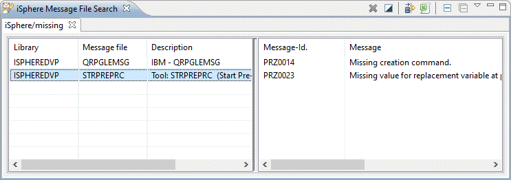
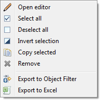

The Message File Search feature gives you the ability to search extremely fast message files on a
server. The first time after an IPL using iSphere Message File Search can take a little bit more
time. But after the second time you should see the improvement.
The Message File Search feature gives you the ability to search extremely fast message files on a
server. The first time after an IPL using iSphere Message File Search can take a little bit more
time. But after the second time you should see the improvement.
To search message files on a server do the following.


Click on the left side on a message file and a preview of the messages containing the search string within the message file appears.
Double click on the left side on a message file and the Message File Editor will be opened.
Right click on the left side on a message file and the context menu appears. Select "Open editor" to open the Message File Editor.

The available menu option are:
| - | Opens the message file editor. | |
 | - | Selects all entries of the message file table. |
| - | Removes the selection for all entries of the message file table. | |
| - | Inverts the selection of the message file table. | |
| - | Removes the selected entry from the message file table. |
The additional icons at the top at of the view and their meanings are:
| - | Creates an object filter for the items of the message file frame add adds the filter to the RSE tree. | |
| - | Exports the content of the message file frame to Excel. | |
| - | Closes the active tab. |
The iSphere Message File Search can also be started from the Eclipse Search Pop-up window. Use CTRL-I,M or the "Search" menu, option "Search..." to open the iSphere Message File Search dialog.

The additional options are:
| Connection | - | Specifies the connection that is used to connect to the host. |
| Target | - | Specifies the library and message file that is searched. Each item accepts *generic* strings. |
| Columns | - | Specifies the column range of the first level text that is searched for the search argument. |
| Options | - | Specifies the message text parts that are search for the search argument. |